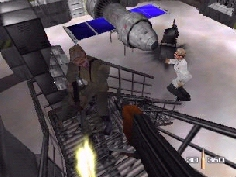
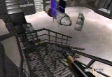
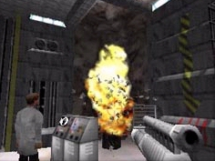
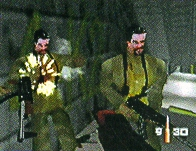

|
.
| Goldeneye
Version Beta : Silo |
| Le
Silo est particulier. Ci-dessous, une Image montrant Bond utilisant
le Laser. Apparemment le Laser était TRES utilisé dans
la Version Beta. Deuxieme et Troisième Photo : Un Comparatif
Avant / Après où on voit que les Ailes du Satellite
ont changé. |



Ci-dessous à Gauche, encore une Image avec le Laser et la Silhouette de Bond. A Droite, une du KF7 qui a changé de Look. On voit pas mal d'Images Beta avec l'Ancienne Allure de cette Arme, qui a du etre changée vers la Fin. Notez que les Gardes portent des KF7 de la Version Finale. |

